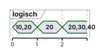

%%{init: {'theme': 'base', 'themeVariables': {'background': '#FFFFFF', 'primaryColor': '#FFFFFF', 'primaryBorderColor': '#E5E5EA', 'primaryTextColor': '#1D1D1F', 'lineColor': '#86868B'}}}%%
sequenceDiagram
participant HW as Hardware
participant ISR as Top-Half
participant K as Kernel
participant W as Worker
HW->>ISR: Ereignis
ISR->>ISR: quittieren, Daten retten
ISR->>K: Signal oder kurze Queue
Note over W: Ready, noch nicht Running
ISR-->>K: ISR-Ende
K->>W: PendSV, wenn Priorität passt
W->>W: Verarbeitung, dann warten
05 · Inter-Task-Kommunikation und Interrupts
Queues, Mailboxes und ISR-Anbindung · EZS · DHBW Stuttgart
Prof. Dr.-Ing. Daniel Klünder
Willkommen zurück zu Echtzeitsysteme!
- Fünfter Termin: Daten transportieren, nicht nur sperren
- Ein FreeRTOS-Kernel auf dem CM4, wie in VL3/VL4, sofern das Projekt das bestätigt
- Eine lokale Queue ist kein Kanal zwischen zwei getrennten Kerneln
- DMA und der zweite Kern bleiben ein kurzer Anhang
Agenda für heute
- Historie gegen aktuellen Wert
- Queue: Ring, Warten, Überlauf
- Kopie, Pointer, Pufferkreislauf
- Mailbox und mehrere Leser
- Top-Half, zulässige ISR-API, EXTI-Labor
Recap: Die Lehren aus Termin 4
counter++ist ein Read-Modify-Write, nicht universell drei Befehle- Präemption auch durch Ereignisse, Wechsel im Port über PendSV
- PIP kürzt die Extra-Zeit durch Medium, nicht jede Verzögerung
- Ein Mutex kann einen konsistenten Snapshot schützen
- Er liefert keine Historie und keine Ereignisschlange
Mutexe schützen, aber transportieren nicht!
- Viele Samples hintereinander: der letzte Wert überschreibt die früheren
- „Mehr Zeit am Schloss als beim Rechnen“ nur mit Messung oder als Hypothese
- Eine Queue kopiert und weckt; auch das kostet
- Hohe Raten oft als Block, nicht jedes Sample als eigene Nachricht
- 44000 Samples/s nicht als belegte Laborzahl verwenden
Motivation: Producer & Consumer
Fünf Samples bei \(t = 1,2,3,4,5\,\mathrm{ms}\). Der Leser kommt nach dem fünften.
| Speicher | Inhalt |
|---|---|
| eine globale Variable | nur Sample 5 |
| FIFO mit Platz | Folge 1 bis 5, wenn nichts verworfen wurde |
- „Alle Ereignisse in Reihenfolge“: Überschreiben ist Verlust
- „Aktueller Zustand“: Überschreiben kann gewollt sein
- Sequenznummer und Zeitstempel machen Lücken und Alter sichtbar
- Die Zeitquelle muss zur Einheit passen
Die Falle der globalen Variable
- Geschützt: ein konsistenter Stand
- Ungeschützt: zerrissene Felder, wie in VL4
- Kein Warten auf „neue Daten“, kein Rückstau, keine Reihenfolge
- Ein Puffer gleicht Bursts aus
- Er macht einen dauerhaft langsameren Consumer nicht schneller
Die Lösung: Inter-Task Communication (ITC)
Begrenzter Puffer, nicht nur zwei Kästen:
Producer → Slot → Slot → Slot → Consumer
- Put reiht eine Kopie des Elements ein
- Get entnimmt ein Element
- Mehrere Consumer teilen sich die Arbeit
- Sie bekommen nicht alle dieselbe Nachricht
Lernziele des heutigen Tages
- Historie und Latest-Value auseinanderhalten
- Einen Ring mit Head, Tail und Count lesen
- Wertkopie, Pointerkopie und Pufferbesitz trennen
- Put mit Timeout 0 nicht mit Overwrite verwechseln
- EXTI nur mit zulässiger NVIC-Priorität an den Kernel hängen
Die Queue (Warteschlange)
- Im Adapter mit
msg_prio = 0: normales Put/Get ist FIFO - Die CMSIS-Spezifikation sortiert nach
msg_prio - Der dokumentierte CMSIS-FreeRTOS-Adapter ignoriert den Parameter
- Das ist keine Taskpriorität
- „Immer 0, historisch“ reicht als Erklärung nicht
Der Lebenszyklus einer Queue
Ring \(N = 3\). Put 10, Put 20, Get liefert 10, Put 30, Put 40.
Logische Restfolge: 20, 30, 40.
Physisch danach: Slots \([40,\,20,\,30]\), Head = Tail = 1, Count = 3.
Gleiche Indizes können leer oder voll sein. Count entscheidet.

Speichermanagement einer Queue
- Nutzdaten, Kontrollblock, Alignment, Allokator getrennt zeichnen
- \(N = 10\) und
uint32_t: 40 Byte Nutzdaten, plus Verwaltung osMessageQueueNewmit AttributNULL: dynamisch, kannNULLliefernNULList nicht nur „Heap voll“: auch Parameter, Kontext, Konfiguration- Statische Puffer: Größe aus Header, Adapter und Linker-Map
- Delete erst, wenn niemand mehr nutzt
- Ein gespeicherter Pointer gibt das Bildarray nicht frei
Die Magie: Blockieren bei Leerlauf
- Consumer, Timeout warten, Queue leer → Blocked
- Put macht ihn Ready
- Er läuft, wenn der Scheduler ihn wählt
timeout = 0: sofortiger Status, Zielwert nicht als neue Nachricht behandeln- Endliche Wartezeit kann mit Timeout enden
osWaitForevermacht einen ungültigen Handle nicht gültig
Die Magie: Blockieren bei Überlast
- Producer, Queue voll, Timeout > 0 → Blocked, bis ein Platz frei wird
- Try-Put: nichts eingereiht, Nachricht bleibt beim Sender
- Nicht jeden Fehler „Queue voll“ nennen
- Nur bei
osOKweiterverarbeiten
Zusammenfassung: ITC-Vorteile
- Reihenfolge, solange Platz und Verträge passen
- Warten ohne Polling
- Kopie entkoppelt die Stackvariable
- Keine Priority Inheritance für das Paar Producer/Consumer
- Kein unendlicher Puffer bei \(\lambda > \mu\)
Überlauf: Burst und Dauerlast
Lehrannahmen: \(N = 10\), anfangs leer, API-Zeit 0. Put bei \(1,2,3,\ldots\,\mathrm{ms}\). Get bei \(5,10,15,\ldots\,\mathrm{ms}\). Zur selben Zeit zuerst Put, dann Get. Voller Try-Put verwirft den neuen Wert.
| Zeitpunkt | Stand |
|---|---|
| nach \(5\,\mathrm{ms}\) | Count 4 |
| nach \(10\,\mathrm{ms}\) | Count 8 |
| bei \(12\,\mathrm{ms}\) | Count 10 |
| erster Fehl-Put | \(13\,\mathrm{ms}\) |
Über \(1\)–\(20\,\mathrm{ms}\): 20 Versuche, 13 erfolgreiche Puts, 7 verworfen, 4 Gets, 9 bleiben.
\(\lambda = 1000/\mathrm{s}\), \(\mu = 200/\mathrm{s}\): kein endlicher Puffer hält das verlustfrei, wenn jede Entnahme nur eine Nachricht ist. Ein Consumer, der danach einen ganzen Stapel leert, ist ein anderes Modell.
Kapazität planen
Unter einem begrenzten verlustfreien Modell:
\[N \ge \max_t \bigl(A(t) - D(t)\bigr)\]
- \(A\): angebotene Nachrichten, \(D\): Entnahmen
- Nicht erst die Puts zählen, die nach Drops noch klappen
- Fünf Nachrichten ohne zwischenzeitliches Get brauchen fünf Plätze
- Ein schon verarbeiteter Satz liegt außerhalb der Queue
- Payload-Pool extra zählen
| Entscheidung | Wirkung |
|---|---|
| Quelle drosseln | nur wenn die Quelle warten kann |
| neuen Wert verwerfen | Lücke in der Historie |
| alten ersetzen | Latest-Value, andere API |
| Fehler melden | jemand muss ihn sehen |
ISR wartet nicht. Ein ADC hält nicht automatisch an.
CMSIS-API: Queue anlegen
typedef struct {
uint32_t sample;
uint32_t seq;
uint32_t tick;
} SensorMessage;
osMessageQueueId_t q;
void app_init(void) {
if (osKernelInitialize() != osOK) Error_Handler();
q = osMessageQueueNew(8, sizeof(SensorMessage), NULL);
if (q == NULL || osThreadNew(Producer, NULL, NULL) == NULL)
Error_Handler();
if (osKernelStart() != osOK) Error_Handler();
}sizeofund Alignment am Build prüfenuint32_t-Übung darf bleiben; das Struct ist der Datensatz- 1-ms-Modell und
osDelay(10)sind verschiedene Versuche
CMSIS-API: Daten schreiben (Put)
| Status | Bedeutung |
|---|---|
osOK |
Kopie ist in der Queue |
| voll, Timeout 0 | nichts eingereiht |
| Timeout | Wartezeit um, nichts eingereiht |
| Parameter, ISR, Handle | kein „einfach voll“ |
msg_prio = 0 im Labor: FIFO-Entscheidung, vom FreeRTOS-Adapter ignoriert.
CMSIS-API: Daten lesen (Get)
- Signatur
void Task(void *argument) - GetCount nur zur Diagnose
Unter der Haube: Copy by Value
| Value-Queue | Pointer-Queue | |
|---|---|---|
| Element | Sample oder Struct | Adresse oder Deskriptor |
| RAM der Queue | \(N\) mal Elementgröße | \(N\) mal Zeigergröße |
| Nutzdaten | liegen in der Queue | liegen woanders, gemeinsam |
- Auch der Pointer wird by value kopiert
- Das Bild wird nicht kopiert
- Es entsteht kein Eigentumsvertrag
sizeof(uint8_t *)im CM4-Build: 4 Byte, keine Sprachgarantie für jede ABI- Nach erfolgreichem Put darf die Pointervariable woanders hinzeigen
- Das Array darf erst nach vereinbarter Freigabe neu beschrieben werden
Der Feind der Queue: Große Daten!
\(320 \times 240\) Byte:
- ein Bild: 76800 Byte = 76,8 kB = 75 KiB
- zwei Puffer: 150 KiB
- zehn Bilder als Value-Queue: 750 KiB Nutzdaten, plus Verwaltung
- zehn Pointer-Slots: 40 Byte, die Bilder bleiben extra
Große Kopien sind teuer, nicht pauschal verboten. Es zählen Größe, Rate, RAM und maskierte Kernelpfade.
Die Lösung: Copy by Reference (Pointer)
- Die Adresse wird kopiert,
slotdarf danach umgebogen werden - Zwei Arrays A und B allein verhindern das Überschreiben nicht
- Fehlgeschlagenes Put: Puffer bleibt beim Producer
- Zu wenige echte Puffer: die Pointer-Queue läuft nicht von selbst voll mit Bildern
Gefahren von Copy by Reference
Lebenszyklus, genau ein Verantwortlicher:
FREE → FILLING → QUEUED → PROCESSING → FREE
- Ready-Queue und Free-Pool sind zwei Richtungen
- Put ok: Verantwortung geht weiter
- Put scheitert: keine zweite Einreihung, keine Doppelrückgabe
- Queue für zehn Pointer erzeugt keine zehn Bilder, wenn nur A und B existieren
Fehler in den Notizen: Stack der beendeten Funktion, freigegebener Heap, DMA schreibt weiter.
Der Spezialfall: Die Mailbox
Drei Abläufe, Start leer, dann 10, 20, 30:
| Muster | Ergebnis |
|---|---|
| FIFO mit Platz | 10, dann 20, dann 30 |
| Länge 1, Put Timeout 0 | 10 bleibt, 20 und 30 werden abgelehnt |
| Overwrite | zuletzt 30 |
Länge 1 ist keine Overwrite-Semantik.
„Timeout 0 als Näherung“ ist falsch: der alte Wert bleibt.
Wann Queue, wann Mailbox?
„Mailbox“ hier: Latest-Value, Begriff je RTOS anders.
Native FreeRTOS, eigenes Modul, kein Cast auf osMessageQueueId_t:
xQueueCreate(1, ...)xQueueOverwritexQueuePeek- in der ISR die FromISR-Variante und die Yield-Regel
CMSIS-only: kurzer geschützter Snapshot mit Version und Zeit, Benachrichtigung nach dem Veröffentlichen. Die ISR nimmt keinen Mutex. Nutzdaten kommen über einen erlaubten kurzen Kanal in den Thread.
Das Broadcast-Konzept (Mailbox)
- Get: ein Element, ein Consumer
- Peek oder Snapshot: mehrere Leser, zu verschiedenen Zeiten verschiedene Versionen
- Jeder Pflichtempfänger braucht einen eigenen Zustellvertrag
- Zusammenfassen von Zuständen kann gewollt sein
- Ereignisse brauchen die FIFO oder eine Zählung
Zusammenfassung Halbzeit
- Historie: FIFO, Überlauf explizit
- Zustand: Overwrite oder Snapshot, nicht die 1er-Queue mit Try-Put
- Pointer: 40 Byte Slots sind nicht 750 KiB Bilder
- Warten und Fehlerstatus gehören zum Pfad
Block 4: Interrupts im RTOS
- Die ISR unterbricht Threads dieses Kerns
- Höhere IRQs können sich schachteln, je nach Maske
- Der andere Kern und DMA können weiterlaufen
- „Die CPU steht“ ist falsch
- Eine lange ISR verzögert Threads und kann den Tick verschieben
- Verpasste Ticks sind nicht beliebig tief gespeichert
- Ob Fristen reißen, sagt das Budget, nicht der Satz „alle Deadlines wandern“
Rückblick: Die goldene Regel der ISR
- Kurz, keine blockierende API, kein
printf, kein Mutex - Timeout 0 macht eine verbotene CMSIS-Funktion nicht erlaubt
- Nicht jede native Funktion hat FromISR
- Falsche Nutzung: Status, Assert, Lockup oder Inkonsistenz, nicht zwingend HardFault
Das Architektur-Muster: Deferred Interrupt Processing
Top-Half: das, was die Hardware sofort braucht.
Bottom-Half: der Thread, Priorität nach Frist und Last, nicht pauschal „sehr hoch“.
Register lesen und Flags löschen in der Reihenfolge des Geräts. „Erst Flag, dann Daten“ gilt nicht überall.
Im HAL-EXTI-Pfad nicht ein zweites Mal quittieren.
Die Top-Half (Die ISR)
- Quittung und die Daten, die sonst verloren gehen
- Ein Semaphor-Token enthält kein Bild
- Drei Releases vor dem nächsten Acquire, max count 1: höchstens ein Token, zwei Releases scheitern
- „Arbeit da“ passt; lückenloses Zählen braucht eine Queue mit Überlaufzähler
- Prellen, Zusammenfassen und Queue-Drop sind drei verschiedene Dinge
Die Bottom-Half (Die Task)
- Acquire-Status prüfen, dann arbeiten, wieder warten
- Mehrere gepufferte Sätze ohne neue Flanke sind erlaubt
- UART über den geschützten Pfad aus VL4
- Normal: kurze Arbeit und
osDelay/ Warten auf das nächste Signal HAL_Delay(100)nur als Vergleich: Busy-Wait, High kann Low verdrängen, höhere Tasks können trotzdem präemptieren- Eine weiterblinkende LED ist kein Fristbeweis
Visualisierung: Top-Half und Bottom-Half
Wie signalisiert die Top-Half?
| Bedarf | Mittel |
|---|---|
| Arbeit vorhanden | binärer Semaphor, leer erzeugt |
| jedes Ereignis oder Nutzdaten | Queue, Timeout 0, Drop zählen |
| nur ein neuer Stand | Overwrite oder Snapshot, nicht Try-Put |
Der Puffer muss gültig bleiben, bis der Vertrag ihn freigibt.
Die große Hürde: OS-Aufrufe in der ISR
Drei Fragen, alle ja:
- Ist die Funktion in der ISR erlaubt?
- Ist der Aufruf nicht blockierend?
- Liegt die IRQ-Priorität im Syscall-Bereich?
| CMSIS | aus ISR |
|---|---|
| Queue Put/Get | nur Timeout 0 |
| Semaphore Release | ja |
| Semaphore Acquire | nur Timeout 0 |
| Mutex Acquire/Release | nein |
| New, Reset, Delete | nein |
Native FreeRTOS-Lösung: Eigene ISR-Funktionen
xQueueSendFromISR,xSemaphoreGiveFromISRxHigherPriorityTaskWokenbeginnt beipdFALSE- danach
portYIELD_FROM_ISR - Fehlendes Yield: unter den Annahmen zuerst zurück zur unterbrochenen Task, bis ein späterer Anlass schedult
- Das ist ein Fehlerbild, nicht „der Kernel wartet immer auf den nächsten SysTick“
Die CMSIS-RTOS v2 Abstraktion
- Der ST-Adapter prüft den Kontext und ruft bei erlaubten Funktionen die native FromISR-Variante
- Die Switch-Anforderung sitzt im Wrapper
- Im CMSIS-Labor kein zweites manuelles Yield
- Der Wrapper macht Mutex-Aufrufe dadurch nicht ISR-fähig
Die eine CMSIS-Regel für ISRs
Kleine NVIC-Zahl = höhere IRQ-Dringlichkeit.
Taskpriorität High repariert eine falsche EXTI-Priorität nicht.
Beispiel, nur bei bestätigten 4 Priority-Bits und Grenze 5: logisch 0–4 keine Kernel-API, 5–15 bei passender Gruppierung erlaubt.
configMAX_SYSCALL_INTERRUPT_PRIORITY ist der geschobene Registerwert.
Der Context-Switch aus der ISR (Yielding)
Synthetische Spur, keine H755-Messung:
| Ereignis | Zeit |
|---|---|
| Flanke | 0 µs |
| ISR-Eintritt | 3 µs |
| Worker Ready | 8 µs |
| ISR-Ende | 12 µs |
| Workerstart nach PendSV | 16 µs |
Startlatenz in diesem Modell: 16 µs.
Dazu kommen Maskierung, fremde ISRs und die Worker-Laufzeit bis Completion.
Wie löst FreeRTOS das Yielding?

Hardware-Unterbrechung macht Task A nicht im selben Sinn Ready wie ein Scheduler-Wechsel. A ist verdrängt, solange ISR oder der höhere Worker die CPU hat.
CMSIS ist unser Freund!
- Erlaubte CMSIS-ISR-Funktionen nehmen das Yield mit
- Unerlaubte bleiben unerlaubt
- Diagnose: Rückgabewert, Assert, Zähler — kein
printfin der ISR - Eine IRQ oberhalb der Grenze darf Daten ablegen und eine niedrigere, erlaubte IRQ anstoßen
- Sie darf den RTOS-Aufruf nicht selbst erzwingen
- Das ist Anhang, nicht der Tasterversuch
Visualisierung: Präemption aus der ISR
Ereignis → ISR → Ready → ISR-Ende → PendSV → Worker.
Nicht: Ereignis → sofortiger Thread.
Die alte kleine Kurve ohne Einheit ersetzt dieses Bild nicht.
Laborvorbereitung: Deferred Interrupts
Teil A: Queue mit uint32_t oder SensorMessage, Sequenz, definierte Drops.
Teil B: User-Button. UM2408 für NUCLEO-H755ZI-Q / MB1363: Standard PC13, Alternative PA0. Gelbe LD2 an PE1, wenn die Brücken so stehen.
GPIO-Takt, Ausgangsmodus und EXTI-Zielkern prüfen. Der RTOS-aufrufende Handler muss im CM4-Kontext liegen.
Schritt 1: Die Top-Half (ISR) in C
Reihenfolge:
- Takt und GPIO
osKernelInitializeButtonSem = osSemaphoreNew(1, 0, NULL)- Threads prüfen,
osKernelStart - EXTI erst im laufenden Kernel freigeben
Ausstehende Flags nach diesem Vertrag löschen, nicht im frühen MX_GPIO_Init einen Callback ins Leere schicken.
Pfad: EXTI15_10_IRQHandler → HAL_GPIO_EXTI_IRQHandler → Callback → osSemaphoreRelease.
HAL quittiert. Der Callback prüft die Leitung und kehrt zurück.
Schritt 2: Die Bottom-Half (Task) in C
void ButtonTask(void *argument) {
(void)argument;
for (;;) {
osStatus_t st;
st = osSemaphoreAcquire(ButtonSem, osWaitForever);
if (st != osOK) continue;
if (HAL_GPIO_ReadPin(GPIOC, GPIO_PIN_13) != pressed)
continue;
osDelay(20); /* 20 Ticks bei 1 kHz, Pegel erneut prüfen */
if (HAL_GPIO_ReadPin(GPIOC, GPIO_PIN_13) != pressed)
continue;
HAL_GPIO_TogglePin(GPIOE, GPIO_PIN_1);
}
}Vergleichsvariante, ausdrücklich: HAL_Delay(100) als Busy-Wait. Heartbeat darunter kann stocken. Eine noch höhere Task kann unterbrechen.
Entprellung: stabile Pegel und Press/Release im Worker. 100 ms Delay löscht keine schon gespeicherten Folgeevents.
Was werden wir im Labor beobachten?
| Feld | Notiz |
|---|---|
| Semaphor anfangs 0 | |
| NVIC-Zahl und Grouping | |
| Tickfrequenz | |
| Workerpriorität | |
| Drop- und Fehlerzähler | |
| ISR-Dauer, Start, Completion | |
| Heartbeat-Verzögerung | |
| verarbeitete Ereignisse |
Augenmaß an der LED ist keine quantitative Frist.
Messung: GPIO oder vorhandenes Trace, printf danach. Pins nur aus dem Projekt.
Zusammenfassung des Tages
- Variable: letzter Wert; FIFO: Folge, bis der Puffer voll ist
- Ringbeispiel endet bei 20, 30, 40; Head = Tail und Count = 3 heißt voll
- Dauerlast: erster Fehl-Put bei 13 ms, Bilanz 13 und 7
- Pointer-Queue kopiert 4 Byte und nicht das Bild
- Try-Put auf voller 1er-Queue behält 10
- Startlatenz im Lehrbeispiel 16 µs, nicht gemessen
- EXTI-Priorität und leerer Semaphor gehören zur Init
Ausblick
- Nächster Termin: mehrere Kerne, gemeinsamer Speicher, kein gemeinsamer Heap
- Die Queue von heute bleibt lokal auf ihrem Kernel
- Cache und DMA nur mit dem Kern, der den Puffer cached